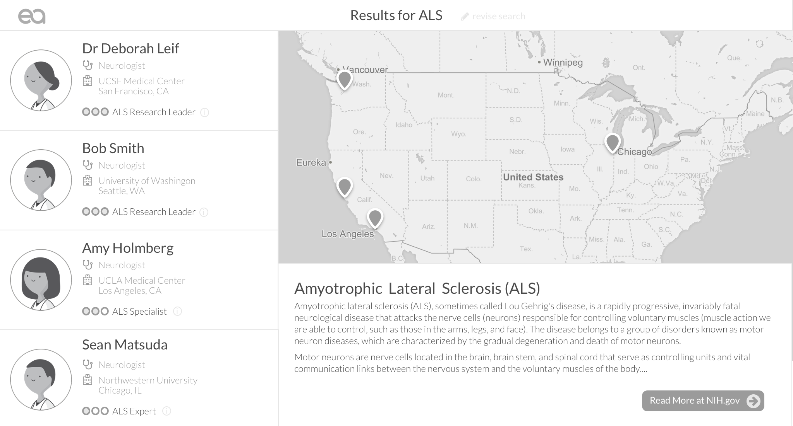
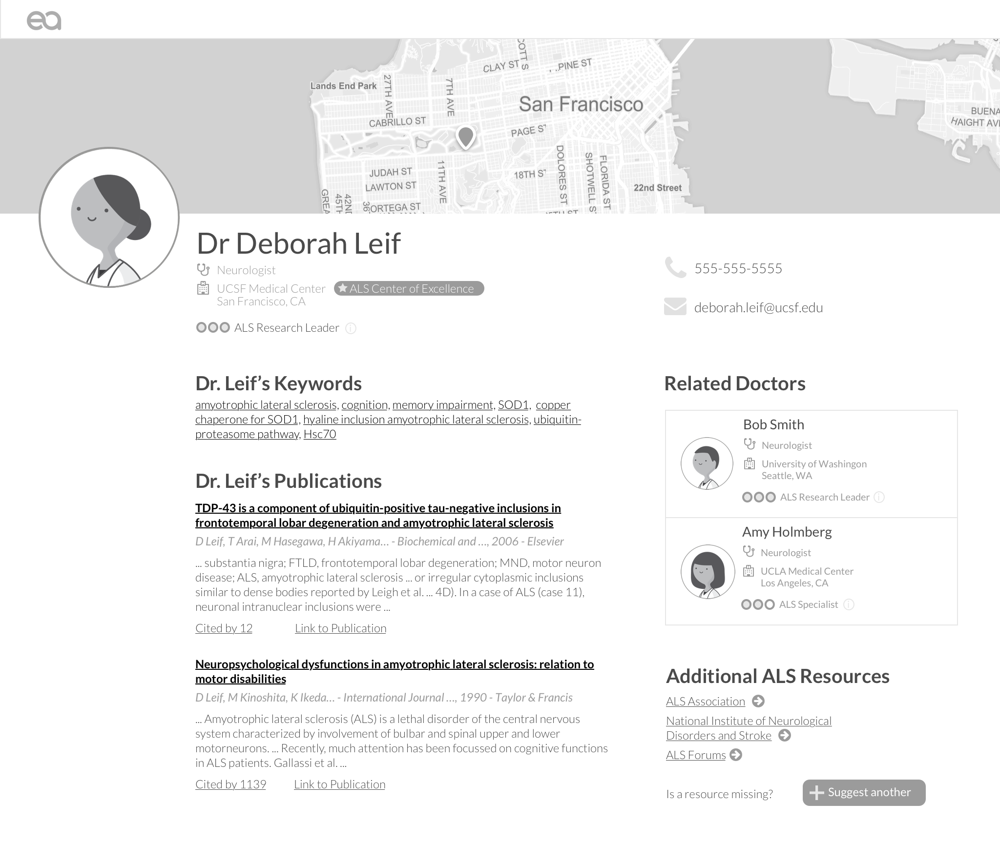

et al Health
Problem
Build a system to improve on the currently complicated and unreliable process of finding a rare disease specialist.
Action
Competitive Analysis, Interviews, Prototype Testing, and collaboration with data scientists.
Result
et al Health is a work in progress. We are finalists in the UC Berkeley Big Ideas competition.
Overview
et al health is a search engine to help people with rare diseases find a qualified specialist. Our algorithm recommends doctors based on their academic research activity. My team is currently conducting research for and building the application, and we will release the beta verison in May 2016. I conduct user interviews and competitive analysis, design assets and wireframes, and will contribute to development.
Our Story

Currently the NIH recommends finding a rare disease doctor by searching PubMed for doctors who actively research the disease and contacting them. A data scientist in our master’s program saw an opportunity to simplify this process for patients, some of whom may have never encountered academic research before. I joined his team, excited by the challenge of translating scientific journals into an acessible form, and the opportunity to help the rare disease community, which includes 30 million Americans.
We began to conduct user research to test our hypothesis that this would help patients find providers, and to understand how it would fit into their search process. 20 interviews with doctors and patients later, we began to understand the complexity of their search behavior and establish personas, which are summarized below.
Personas
The Patient |
The Doctor |
The Parent |
| A person directly suffering from a rare disease. May not have a direct support network. Feels alone, because their condition isn’t well-documented or supported by the healthcare system. | Diagnosed a patient with a rare disease that they had never heard of. They care about their patient but it’s out of their responsibilities to find them a provider. | A family member or close friend has a condition, and they are assisting in finding treatment. They spend significant amounts of their free time doing research on the condition. |
 |
 |
|
| “No one can relate; they haven't even heard about it. The diagnosis took months and finding a doctor turned out to be a struggle as well. ” | “I don’t have time to give my patients the care they deserve. If I want to help, it's in my spare time.” | “I didn't stop asking questions or trying to learn about things I didn’t understand. I had to do it for my son.” |
|
|
|
I illustrated the personas and contributed to their development
Research Results and Design
Our research also began to uncover the complexity of the rare disease space. et al Health, along with many rare disease patient advocacy groups, operates on the assumption that rare diseases share enough commonalities to host services on common platforms. We have tested this assumption from the beginning by focusing on Castleman, a little known disease, and ALS, which has more publicity and cases.
We discovered that across these diseases, the individual, whether the patient, a loved one, or their doctor, consults a variety of websites. In order to advocate for themselves, patients also become fluent in the medical terminology of their disease. Disease variants add another layer of complexity; for example Castleman has both HIV and pediatric variations that manifest differently.
These findings continue to guide the design and scope of the system. We intend to fit into an ecosystem of support for rare disease patients rather than providing a one stop solution. Secondly, we want to gain users’ trust and support their research on the disease itself by exposing the literature in a digestable way. I interpreted these constraints into the following wireframes, which will evolve with more testing in the coming months.
Preliminary Wireframes
 More Projects: